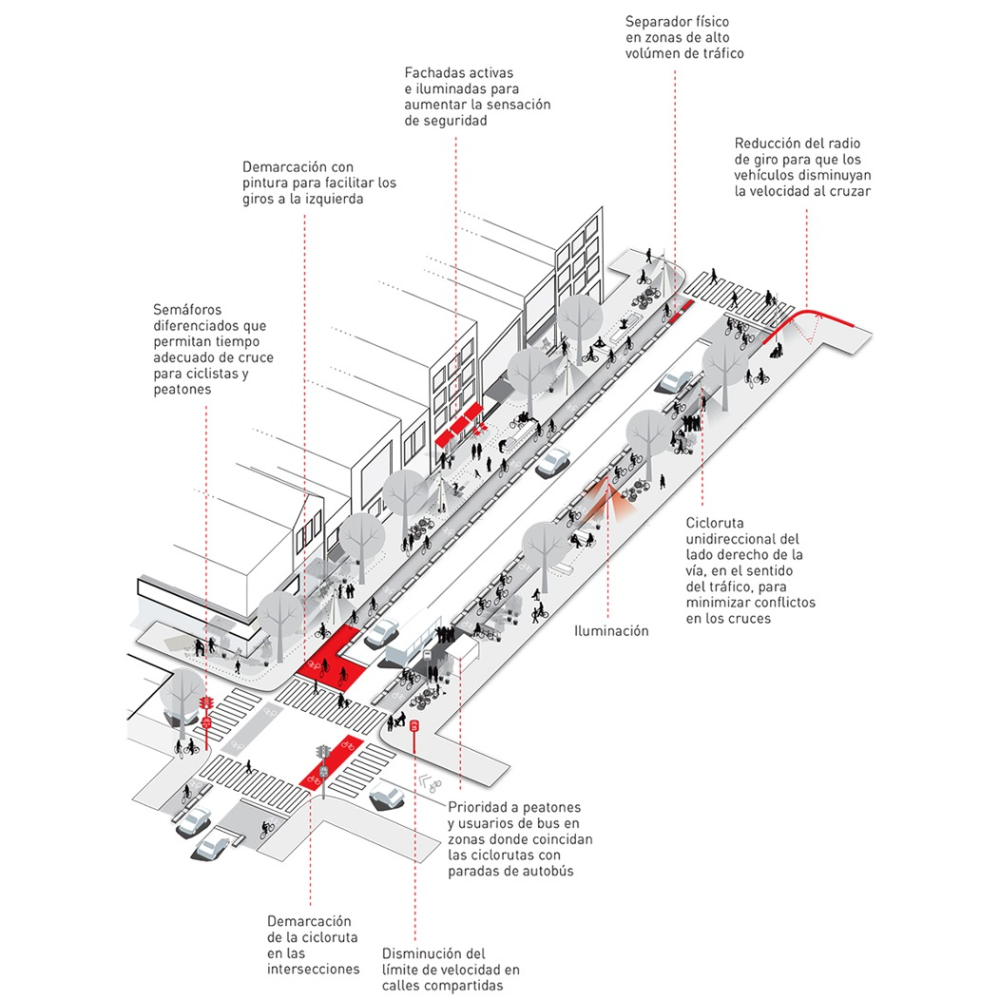
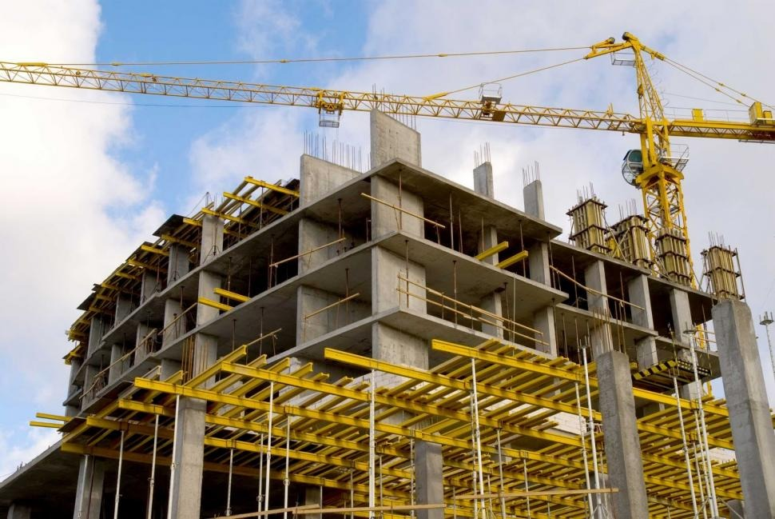
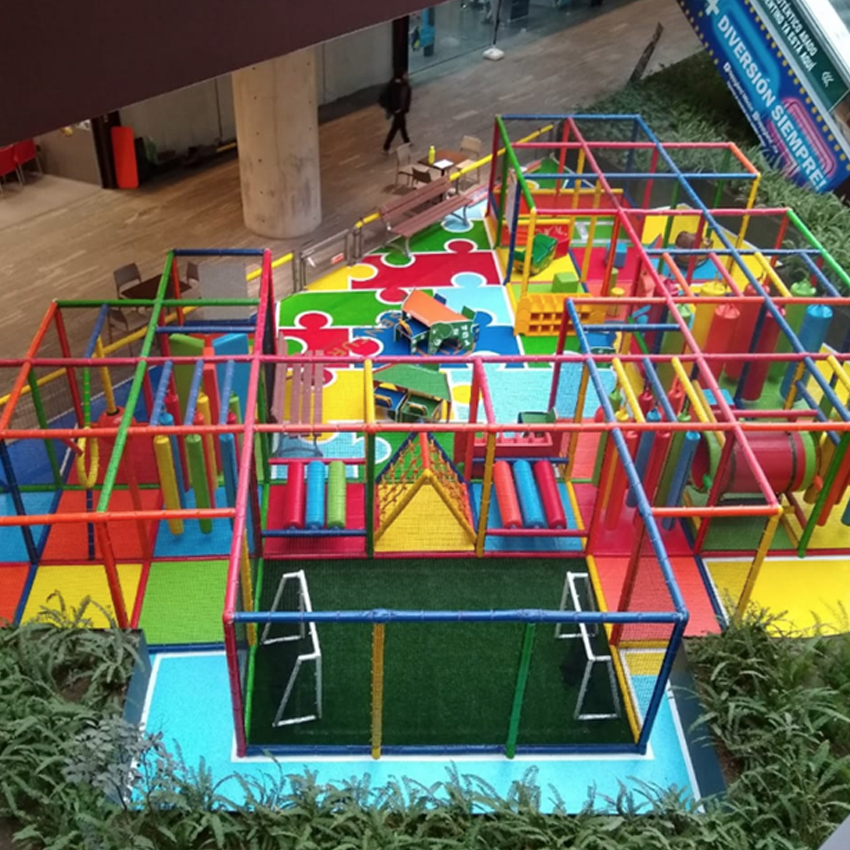
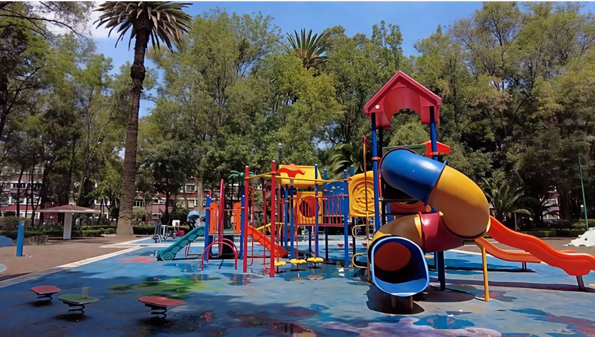
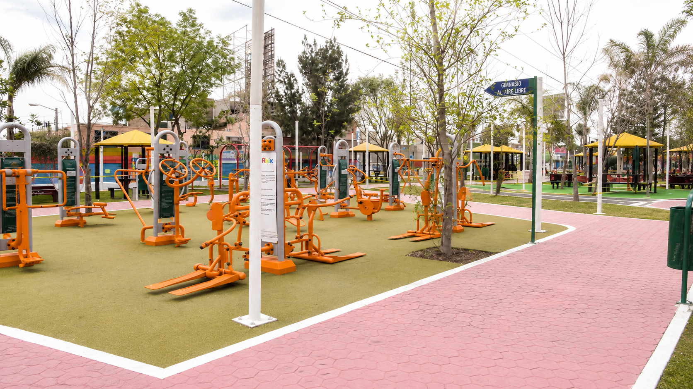
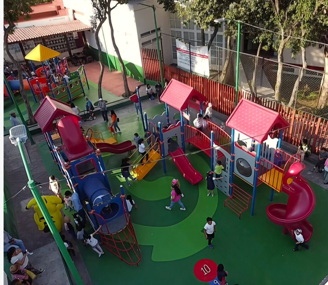
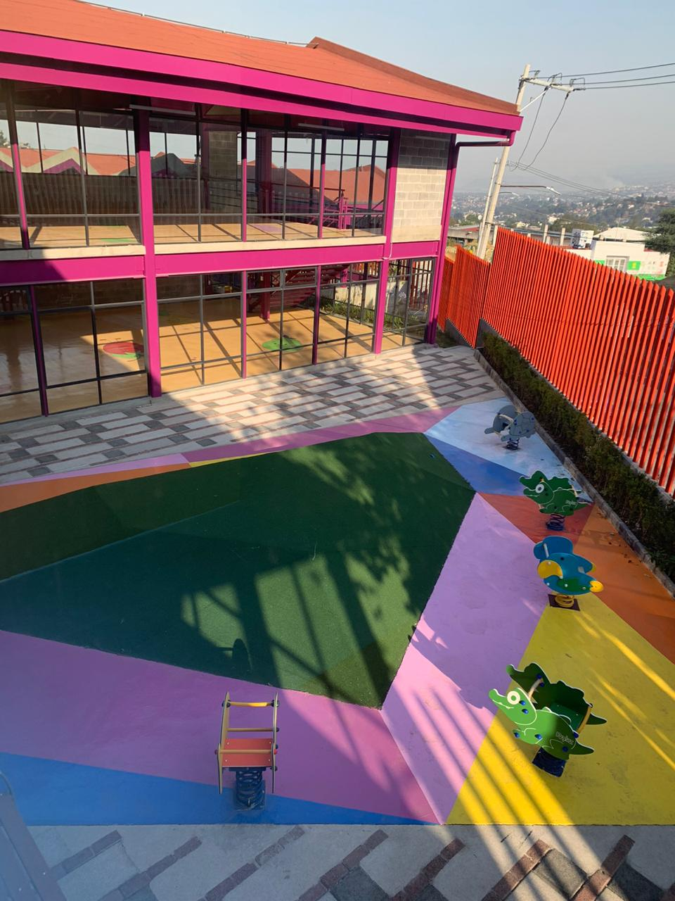
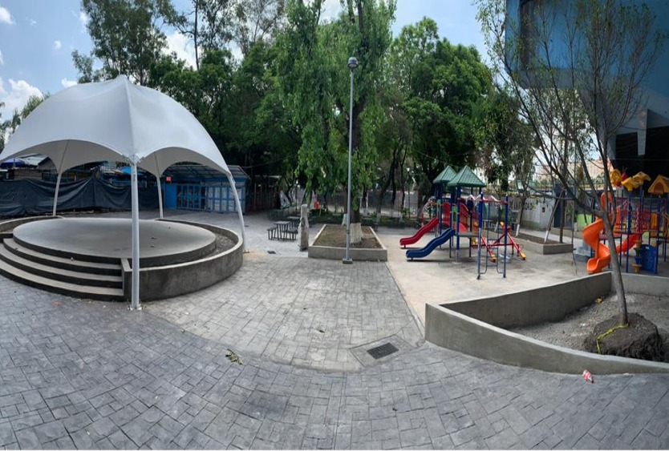
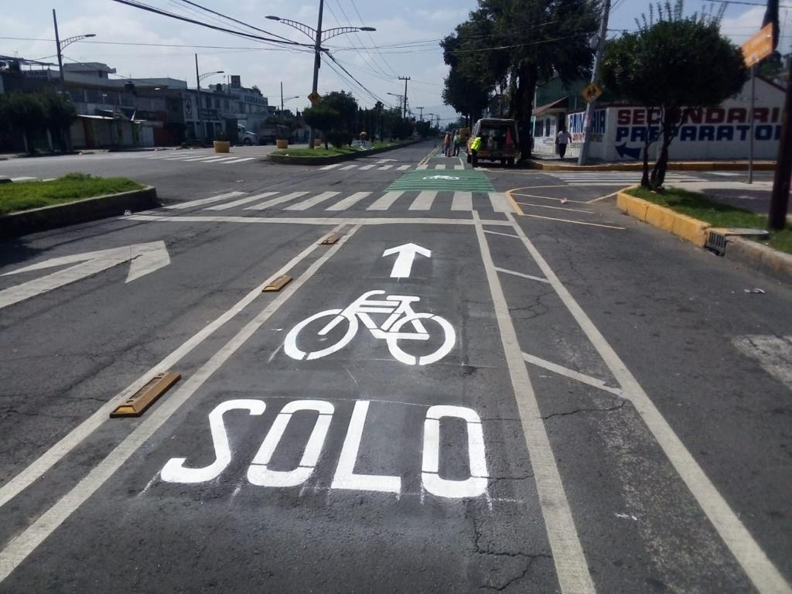

Ser la mejor opción en edificación del segmento habitacional, comercial, industrial e institucional.
La construcción, planeación, estudio, proyecto, mantenimiento y reparación de obras.
Contamos con un equipo multidisciplinario de profesionales, supervisores y personal técnico altamente capacitado, comprometido con la seguridad, la calidad y la excelencia en cada proyecto que desarrollamos.
Nuestra experiencia nos permite planear, ejecutar y administrar obras de distintos niveles de complejidad, garantizando soluciones integrales que cumplen con los más altos estándares de construcción y las necesidades específicas de cada cliente.
Ofrecemos servicios especializados en:




 Jardín Ramón López Velarde
Jardín Ramón López Velarde

Camellón, Av.Pantitlan

Col. San Nicolas Totolapan

CENDI, La Magadalena

Rehabilitacion, Alcaldia Miguel Hidalgo(zona 1)
